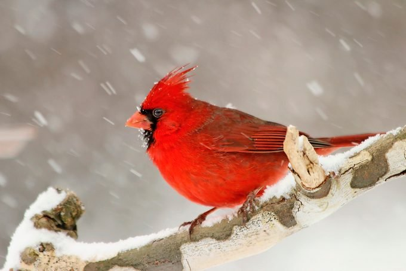
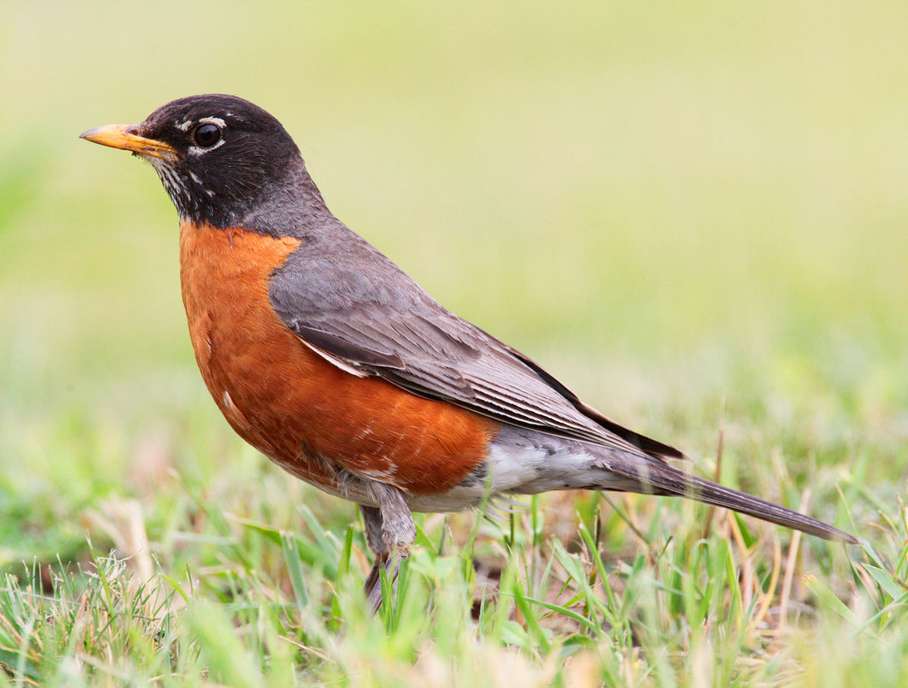

The northern cardinal is a mid-sized songbird with a body length of 21–23 cm (8.3–9.1 in). It has a distinctive crest on the head and a mask on the face which is black in the male and gray in the female. The male is a vibrant red, while the female is a reddish olive color.
Learn More

American Robins are gray-brown birds with warm orange underparts and dark heads. In flight, a white patch on the lower belly and under the tail can be conspicuous. Compared with males, females have paler heads that contrast less with the gray back.
Learn More

The blue jay is between 9 and 12 inches in length. It is bright blue on top and white to gray on its throat, chest and belly. It has a gray-blue crest on its head and black and white bars on its wings and tail. Its bill, legs and feet are black. It also has a black "necklace" on its lower throat.
Learn More

Description of bird
Learn More